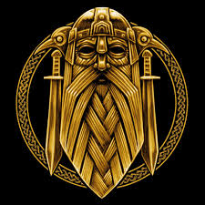

Recipes of the All Father
Here I have put together a small list of two dinners and one cocktail recipe that I feel connects us to the past in a way that's incredibly satisfying and fulfilling.
Mead A Break
Viking Meat Soup
Icelandic Skyr